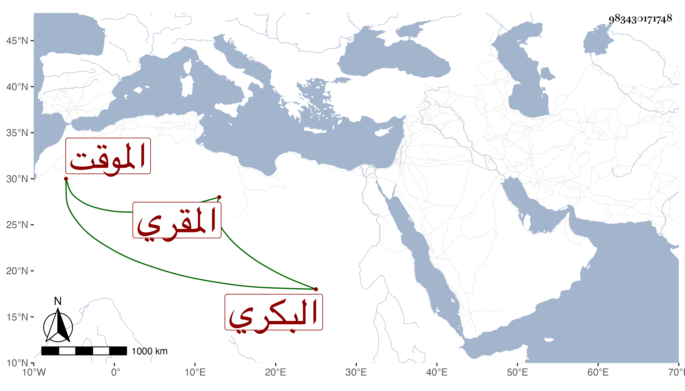

0902Sakhawi.DawLamic.ITO20230111-ara1.EIS1600.983430171748
Biography ID: 983430171748
ابن العطار خليل بن محمد بن إبرهيم المقري والشرف يحيى بن أحمد بن عمر ابن يوسف وأخوه ناصر الدين محمد والد أحمد وعائشة وسارة وفاطمة والمحب محمد بن الشمس محمد بن أحمد بن أحمد بن محمد بن محمد البكري الموقت وأبوه ومحمد بن علي وأحمد بن محمد بن صالح ومقرئ الجوق علي بن رمضان .
